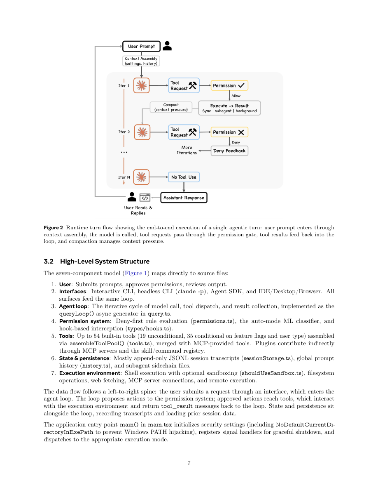

#1
★ 7/10
Dive into Claude Code: The Design Space of Today's and Future AI Agent Systems
深入Claude Code：当代与未来AI智能体系统的设计空间

图 Figure · Page 7 of paper
🎯 拆解Claude Code架构，揭示AI智能体系统设计的核心原则与未来方向。
A systematic architectural teardown of Claude Code reveals how five human values drive thirteen design principles in real-world AI agent systems.
| 维度 | 中文 | English |
|---|---|---|
| ❓ 待解决 的问题 |
随着Claude Code这样的AI编程智能体被大规模部署，业界对其复杂架构的设计原理缺乏系统性理解。开发者在构建自己的智能体系统时，没有清晰的参考来权衡安全性、能力与上下文管理。此外，也缺乏一个比较框架来理解相同的设计问题在不同部署场景下为何会产生截然不同的架构答案。 | As AI coding agents like Claude Code become widely deployed in real software workflows, the field lacks a rigorous, principled understanding of how their complex architectures are actually designed and why specific choices are made. Practitioners building their own agent systems have no clear reference for how safety, capability, and context management trade-offs are resolved in production systems. There is also no comparative framework for understanding how the same fundamental design questions yield different answers in different deployment contexts. |
| 💡 解决 的亮点 |
- **价值观到架构的追溯**：首次系统性逆向工程生产级AI智能体（Claude Code），将五大核心人类价值观映射到13条设计原则，再到具体实现，基于公开TypeScript源码。 - **双系统对比分析**：与独立开源智能体OpenClaw的交叉对比，揭示部署场景如何从根本上塑造架构——例如逐动作ML安全分类 vs. 边界级访问控制。 - **完整子系统梳理**：记录了核心while循环之外被低估的复杂性：7种权限模式（含ML分类器）、5层上下文压缩流水线、4种可扩展机制及沙箱隔离的子智能体委托。 | - **Value-to-Architecture Tracing**: First systematic effort to reverse-engineer a production AI agent (Claude Code) by mapping five core human values → 13 design principles → concrete implementation choices, using publicly available TypeScript source code. - **Dual-System Comparison**: Cross-analysis with OpenClaw (an independent open-source agent) reveals how deployment context fundamentally shapes architecture — e.g., per-action ML safety classification vs. perimeter-level access control. - **Comprehensive Subsystem Mapping**: Documents underappreciated complexity around the central while-loop: a 7-mode permission system with ML classifier, 5-layer context compaction pipeline, 4 extensibility mechanisms, and worktree-isolated subagent delegation. |
| 🧪 实验 内容 |
本文是系统分析与架构研究，而非标准的机器学习实验论文。"实验"包括：(1) 对Claude Code TypeScript源代码进行结构化分析，分解各子系统；(2) 在权限模型、上下文管理、可扩展性、子智能体委托等关键维度上，对Claude Code与OpenClaw进行对比架构分析；(3) 综合近期实证与政策研究文献，为六个未来设计方向提供依据。 | This is a systems analysis and architectural study rather than an empirical ML paper, so there are no standard benchmark experiments. The "experiments" consist of: (1) a structured code-level analysis of Claude Code's TypeScript source, decomposing it into subsystems; (2) a comparative architectural analysis between Claude Code and OpenClaw across key design dimensions such as permission models, context management, extensibility, and subagent delegation; and (3) a literature survey grounding six future design directions in recent empirical and policy research. |
| 📊 实验 结果 |
作为架构分析论文，本文不含基准测试数字或性能提升百分比。主要定性发现包括：Claude Code的权限系统支持7种模式并集成ML安全分类器；上下文管理采用5层压缩流水线；通过4种机制（MCP、插件、技能、钩子）提供可扩展性；子智能体委托使用worktree隔离保障安全。与OpenClaw对比：Claude Code采用逐动作ML分类，OpenClaw采用边界级访问控制；Claude Code运行单一CLI循环，OpenClaw将智能体运行时嵌入网关控制平面；Claude Code的上下文窗口扩展对应OpenClaw的全网关能力注册。此外归纳出6个未来系统的开放设计方向。 | As an architectural analysis paper, there are no benchmark numbers or percentage improvements. Key qualitative findings include: Claude Code's permission system supports 7 distinct modes and incorporates an ML-based safety classifier; its context management uses a 5-layer compaction pipeline; extensibility is provided via 4 mechanisms (MCP, plugins, skills, hooks); subagent delegation uses worktree isolation for safety. Compared to OpenClaw: Claude Code uses per-action ML classification while OpenClaw uses perimeter-level access control; Claude Code runs a single CLI loop while OpenClaw embeds an agent runtime within a gateway control plane; context-window extensions in Claude Code contrast with gateway-wide capability registration in OpenClaw. Six open design directions are identified for future systems. |
| 🏁 结论 | 本文首次对Claude Code进行全面的、以原则为基础的架构分析，证明其看似复杂的代码库围绕五大人类价值观和13条设计原则组织而成，并通过与OpenClaw的对比研究揭示了部署场景如何从根本上决定智能体通用设计问题的架构答案。研究既为智能体系统构建者提供了实践参考，也为下一代AI智能体系统提出了六个开放研究方向。 | This paper delivers the first comprehensive, principle-grounded architectural analysis of Claude Code, showing that its seemingly complex codebase is organized around five human values expressed through thirteen design principles, and that a comparative study with OpenClaw reveals how deployment context fundamentally determines architectural answers to universal agent design questions. The work provides both a practical reference for agent system builders and a research agenda of six open directions for the next generation of AI agent systems. |
| 🔗 论文 链接 |
arXiv: 2604.14228v1 · 📥 PDF | |
⚙️ Method · 方法详解
作者对Claude Code公开的TypeScript源代码进行深度解读，将其架构分解为各子系统，并将每个设计决策追溯至五大人类价值观（人类决策权威、安全保障、可靠执行、能力扩展、情境适应性）。这些价值观被形式化为13条设计原则，并映射到具体实现。同时并行分析OpenClaw（一个多渠道个人助手网关），作为对照案例研究，展示相同设计问题在不同部署场景下的不同解答。最后，作者结合近期实证、架构与政策文献，归纳出未来智能体系统的六个开放设计方向。
The authors perform a close reading of Claude Code's publicly available TypeScript source code, decomposing its architecture into its constituent subsystems and tracing design decisions back to five motivating human values (human decision authority, safety and security, reliable execution, capability amplification, and contextual adaptability). These values are then formalized into thirteen design principles and mapped to specific implementation choices. A second system, OpenClaw — a multi-channel personal assistant gateway — is analyzed in parallel to provide a contrastive case study showing how the same design questions (e.g., permission management, context handling, extensibility) are answered differently when the deployment environment changes. Finally, the authors synthesize six open design directions for future agent systems by drawing on recent empirical, architectural, and policy literature.
📐 Key Formulas · 关键公式
\[\text{Agent Loop: } s_{t+1} = \text{Tool}(\text{Model}(s_t, \text{context}_t))\]
💡 智能体核心循环：在每个时间步，模型根据当前状态和上下文生成动作，工具执行该动作并产生新状态，循环往复。
The core agent loop: at each step, the model takes the current state and context as input, produces an action, a tool executes it to yield the next state, and the cycle repeats — the fundamental while-loop at Claude Code's heart.
🌟 Why It Matters · 为什么重要
随着AI智能体系统在软件工程等领域广泛普及，有原则的架构指导极为匮乏——本文通过对主流生产级智能体的严格源码级解析填补了这一空白，将隐性设计智慧显式化并使其可迁移。与OpenClaw的对比框架及六个未来设计方向，为研究者和从业者构建更安全、更强大、更具适应性的智能体系统提供了共同语言与路线图。
As AI agent systems proliferate across software engineering and beyond, principled architectural guidance is scarce — this paper fills that gap by providing the first rigorous, source-code-grounded anatomy of a leading production agent, making implicit design wisdom explicit and transferable. The comparative framework with OpenClaw and the six future design directions give researchers and practitioners a shared vocabulary and roadmap for building safer, more capable, and more adaptable agent systems.